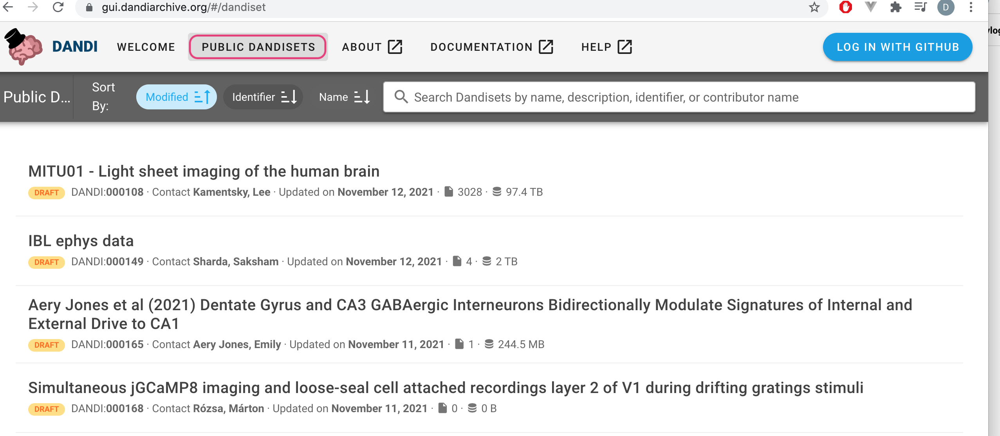
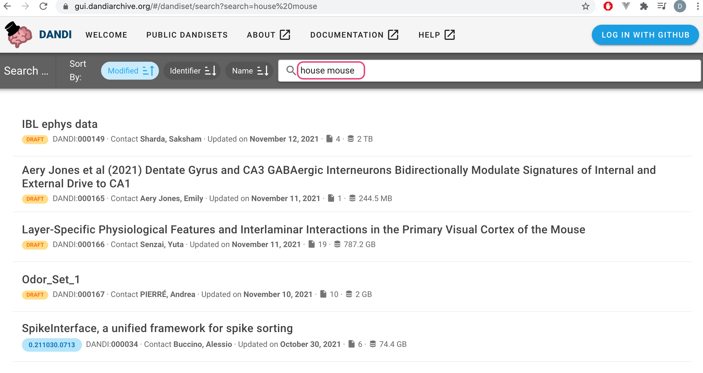
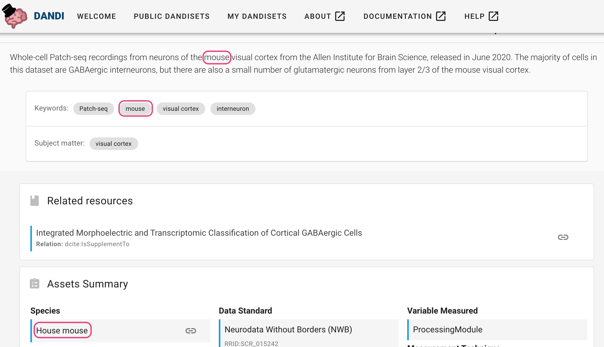
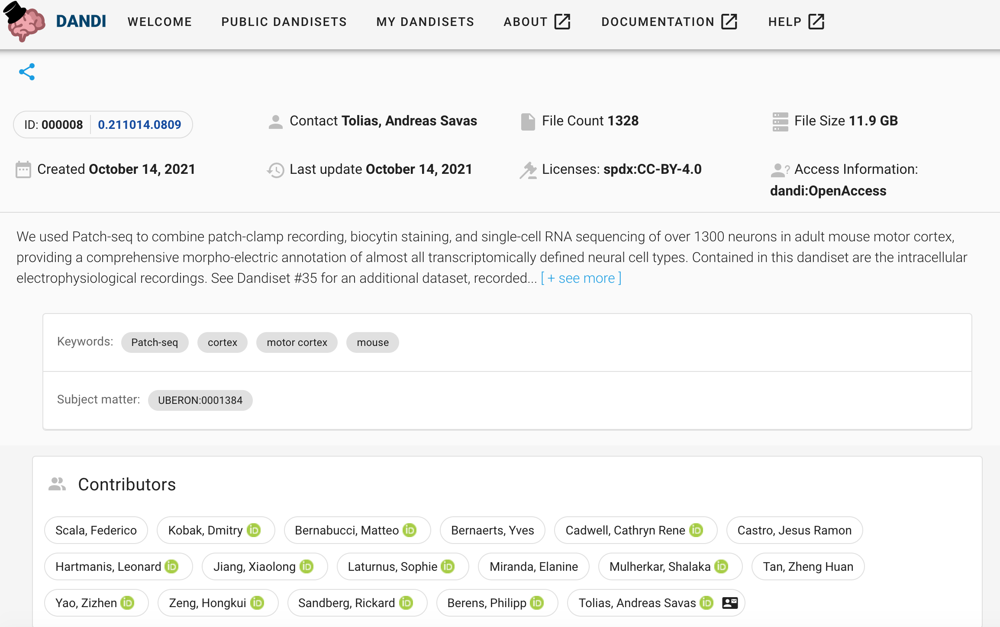
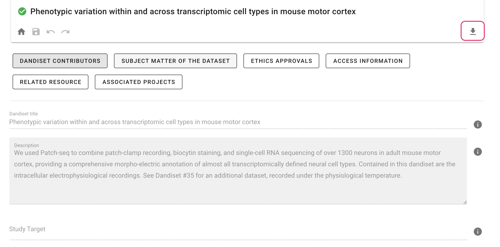
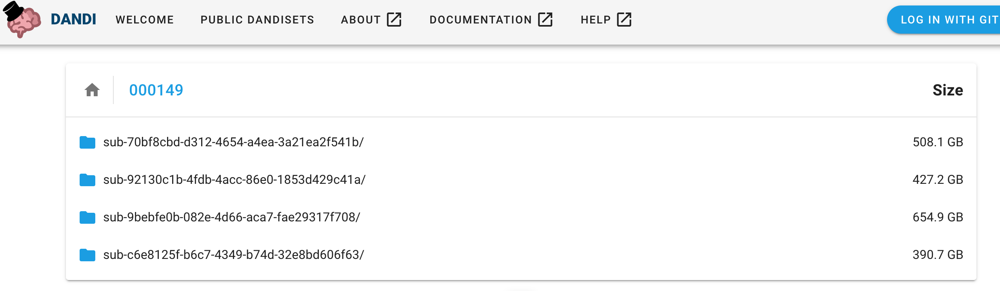

Viewing Dandisets¶
Browse Dandisets¶
When you go to the DANDI Web application, you can click
on PUBLIC DANDISET to access all Dandisets currently available
in the archive, and you can sort them by name, identifier, size, or date of modification.

Search Dandisets¶
In addition, you can search across the Dandisets for any text part of the Dandiset metadata record.
The text may be about contributor names, modalities, or species. For example, "house mouse" will
return a subset of all Dandisets, while "mouse house" will likely not return any. When unquoted each
word is used as an OR.

When you click on one of the Dandisets, you can see that the searching phrase can appear in the description, keywords, or in the assets summary.

Dandisets Metadata¶
The landing page of each Dandiset contains important information including metadata provided by the owners such as contact information, description, license, access information and keywords, simple statistics for a Dandiset such as size of the Dandiset and number of files, or a summary of the Dandiset including information about species, techniques, and standards.

If you scroll down, you will also find: - Assets Summary - Funding Information - Related Resources
While most of the metadata is summarized on the landing page, some additional information can be
found by clicking Metadata on the right-side panel. For Dandiset owners, this button also allows
adding relevant metadata to populate the landing page.

File View¶
The right side panel allows you also to access a file browser to navigate the list of folders and files in a Dandiset.

Any file in the Dandiset has a download icon You can click this icon to download a file to your device where you are browsing or right click to get the download URL of the file. In addition, there is an info icon that leads to full asset metadata. Some files also have a link to external services that can open the file. Note: that these services often have size limits and hence are activated only for appropriately sized files.
My Dandisets¶
If you log in as a registered user, you will also see My Dandisets tab:

By clicking the tab, you can access all the Dandisets you own. For these Dandisets, you can edit and update metadata through the Dandiset actions section, and add or remove other owners or data.